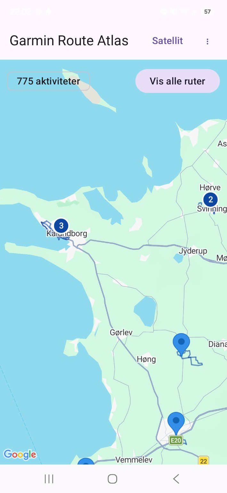
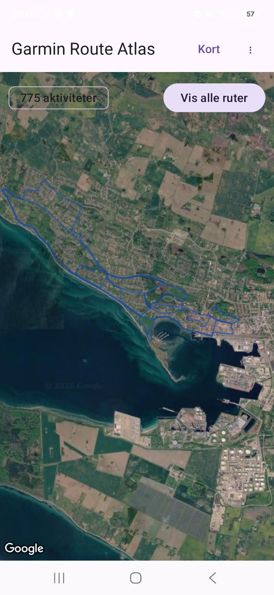
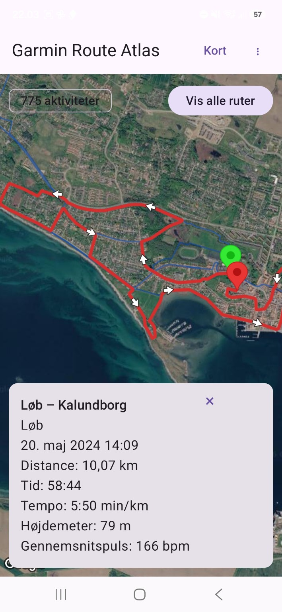
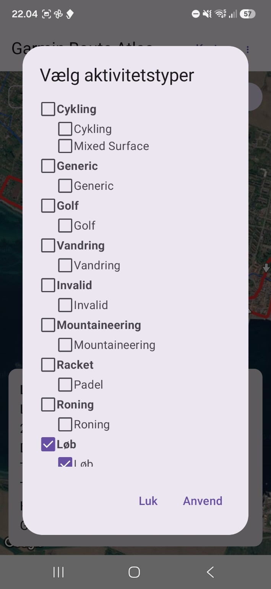
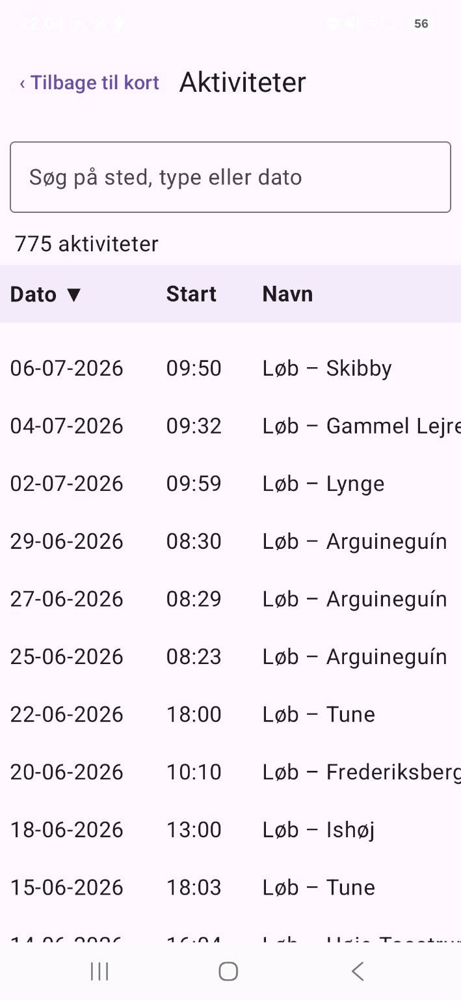

Alle ruter på samme kort
Se dine importerede aktiviteter samlet og navigér frit med zoom og panorering.
Nyhed i version 2.0 · Android
Garmin Route Atlas samler dine GPS-ruter på ét kort og giver dig overblik over daglige skridt, løbetræning og udviklingen i din Garmin-estimerede VO₂max.
Appen er et uafhængigt projekt og er ikke udviklet eller godkendt af Garmin.
Funktioner
Se dine importerede aktiviteter samlet og navigér frit med zoom og panorering.
Den valgte aktivitet fremhæves, så den hurtigt kan skelnes fra de øvrige ruter.
Retningspile og markering af start/slut gør rutens forløb lettere at aflæse.
Sorter og gennemgå aktiviteter med bl.a. Garmin-navn, distance, tid, tempo og højdemeter.
Skift mellem almindelig kortvisning og satellitvisning efter behov.
Importér GPS-aktiviteter og Wellness FIT-data fra hele Garmin-eksportens ZIP-fil.
Se personligt mål, målopfyldelse, gennemsnit, median, graf og dage under målet.
Undersøg sammenhænge mellem dine løbeminutter, puls, løbewatt og Garmins VO₂max-estimat.
Adskil observationer fra dine egne data fra generelle forslag baseret på forskning.
Brug fingrene, vælg år og datoer, og se træningsugerne med den nyeste først.
Hovednyhed i version 2.0
Garmin Route Atlas kan nu sammenholde din løbetræning med VO₂max, puls og løbewatt. Appen hjælper dig med at undersøge muligheder – uden at love en individuel effekt.
Se hvad din dokumenterede træning, restitution og puls ved sammenlignelig løbewatt peger på. Når data er usikre, får du en forsigtig forklaring frem for en skråsikker prognose.
Læs generelle principper fra videnskabelige undersøgelser. De præsenteres tydeligt adskilt fra din personlige Garmin-analyse.
Zoom med to fingre, træk grafen, vælg et år eller præcise datoer, og tryk for at se en uges tal. Begge akser viser skala og måleenheder.
Træningsugerne sorteres fra nyeste til ældste, mens beregninger og historiske data bevares.
Illustration, ikke personlige Garmin-målinger.
Skridt
Appen læser daglige skridt fra Wellness FIT-filer i en komplet Garmin Account Data Export. Gang og løb samles til ét dagstal, som gemmes lokalt på telefonen.
Brug den komplette Garmin-eksport – ikke CSV-oversigten – og pak den ikke ud.
Afslutningsbeskeden viser, hvor mange dage med skridtdata der blev fundet.
Vælg ⋮ → Skridt for at se mål, nøgletal, graf og dage under målet.
Vælg 30 dage, 90 dage, ét år eller alle data og en dækningsgrad fra 80 til 100 procent.
Importér den samme komplette ZIP igen efter opdatering af appen. Eksisterende aktiviteter oprettes ikke igen. Viser afslutningsbeskeden 0 dage med skridtdata, indeholdt eksporten ingen understøttede gang- eller løbeskridt. Dags dato, nulværdier og ugyldige datoer udelades fra analysen.
Visning





Screenshots viser den aktuelle Android-app med kortoversigt, satellitvisning, valgt aktivitet, filtre og aktivitetsliste.
Download
Download APK-filen direkte herfra. Android vil normalt bede dig godkende installation fra denne kilde første gang.
Android · APK
Installation
Tryk på downloadknappen ovenfor på din Android-enhed.
Åbn den downloadede APK-fil fra browseren eller appen Filer.
Hvis Android spørger, tillad installation fra den aktuelle kilde.
Gennemfør installationen og start Garmin Route Atlas.
Installér kun APK-filer, du har tillid til. På denne side kan en SHA-256 checksum offentliggøres sammen med hver release, så filen kan verificeres.
Versioner
En ny hovedversion med træningsanalyse og bedre adgang til mange års løbehistorik.
Om projektet
Garmin Route Atlas er udviklet som et selvstændigt værktøj til visualisering af importerede aktivitetsruter, daglige skridt og Garmin-baseret træningsanalyse. Projektet er ikke tilknyttet Garmin Ltd. eller dets datterselskaber.
Siden gemmer ikke i sig selv Garmin-login eller Garmin-adgangsoplysninger.